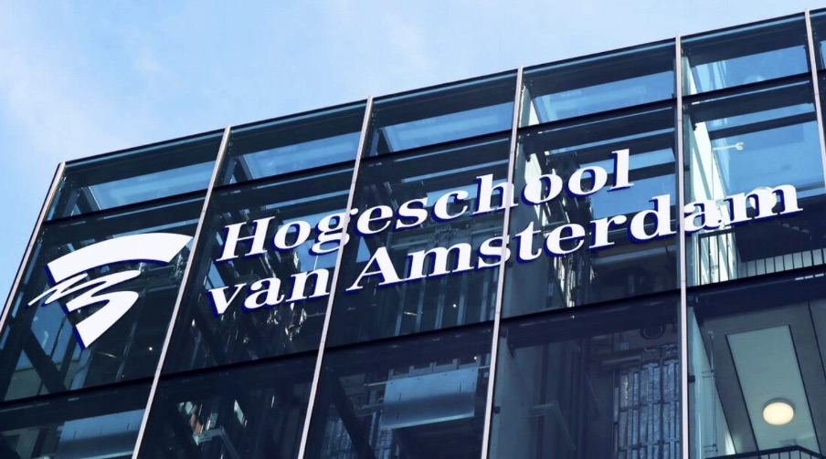
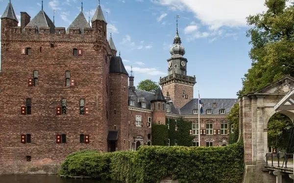
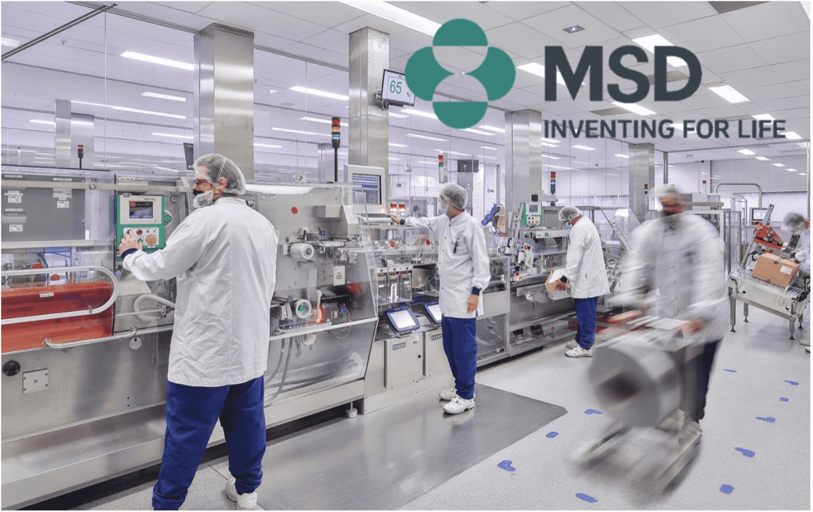
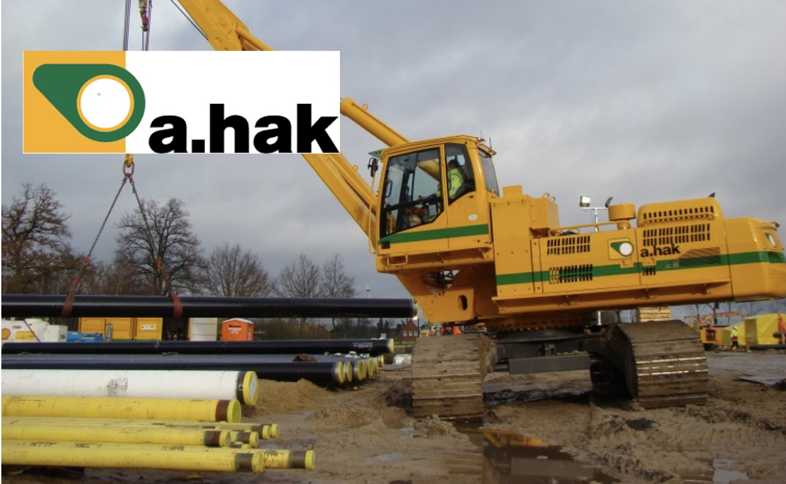

Available from March 2027 · analyst roles in M&A, transaction services and restructuring
From the shop floor
to the business case.
I work where operations and numbers meet: seeing where a company loses margin, and turning that into a decision that holds up. Background in industrial engineering and management, currently MSc Management with a specialisation in Financial Management.
01 · Background
What I am good at, and why those things connect.
Operations
Seeing where the margin sits
Taking a process apart until it is clear where time, money and capacity leak away, and which intervention actually fixes it.
Finance
Decisions that hold up
Basing choices on data rather than assumption. Cost, risk and return as the ground for the decision that follows.
Mindset
Ownership
Taking responsibility, spotting opportunities and turning ideas into something that is actually finished. Practical, with an eye on the result.
02 · Education
Where I built the foundation.

Programme · 2020 to 2024Amsterdam University of Applied Sciences
BSc Engineering · Business Engineering
Engineering, operations and management combined, aimed at analysing and improving business processes.
View programme →

Programme · 2025 to 2027Nyenrode Business University
MSc Management · Premaster
Premaster and master's programme. Emphasis on strategy, organisation and making sound choices under uncertainty.
View programme →
03 · Experience
Three places where I learned how work actually runs.

Internship · 2023MSD
Technical Operations
Built a tool in Excel and VBA for FTE allocation across Capex projects, refined in rounds with the people using it.
View case →
EY
Technology Risk
Worked alongside audits of IT controls. Researched the onboarding process, which ran differently for every new joiner.
View case →

Work · 2025A. Hak
Work preparation
Aligned planning between the office and the crews on site, and made gaps between plan and practice visible early.
View case →
04 · Contact
Thinking through a problem, or simply getting acquainted.
Calendar
Book 30 minutes Online introduction, straight into the diary.To prepare for a conversation: my Management Drives profile.